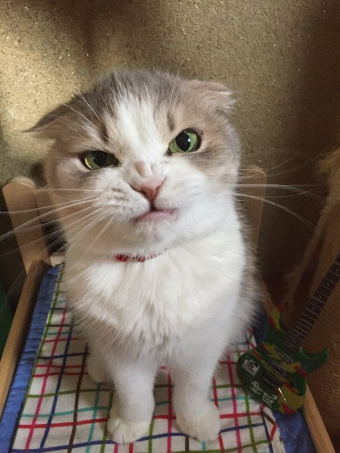

Собаки чи Коти?
Собаки: сімейні улюбленці
Дуже добрі, віддані сімейні улюбленці
Собакени
Коти: домашній затишок

Граційні, затишні сімейні улюбленці
Котовскі
«Співвідношення популярності»
«Порівняльний аналіз»
- Кішки володіють гордістю та свавіллям. У них відчуваються характер і волелюбство. Зате кішка не буде такою слухняною та відданою, як собака.
- Кішка дарує спокій і гармонію, а з собакою вам не доведеться нудьгувати. Це загальна закономірність. Хоча бувають пасивні собаки, а також дуже «темпераментні» коти.
- Собаку потрібно вигулювати. Кішці досить давати можливість подихати в вікно (з дотриманням запобіжних заходів). Це економить час та сили. Зате з собакою можна пограти, в повній мірі, насолодившись спілкуванням зі своїм чотириногим другом.
- Коти більш агресивні та своєнравні, тому часто дряпають господарів. Собака ж тільки залиже до втрати свідомості. Зрозуміло, це гіперболізовані висловлювання. Однак практика показує: від представників котячого світу більше травм та пошкоджень. Не забувайте: і кішок, і собак потрібно обов'язково виховувати.